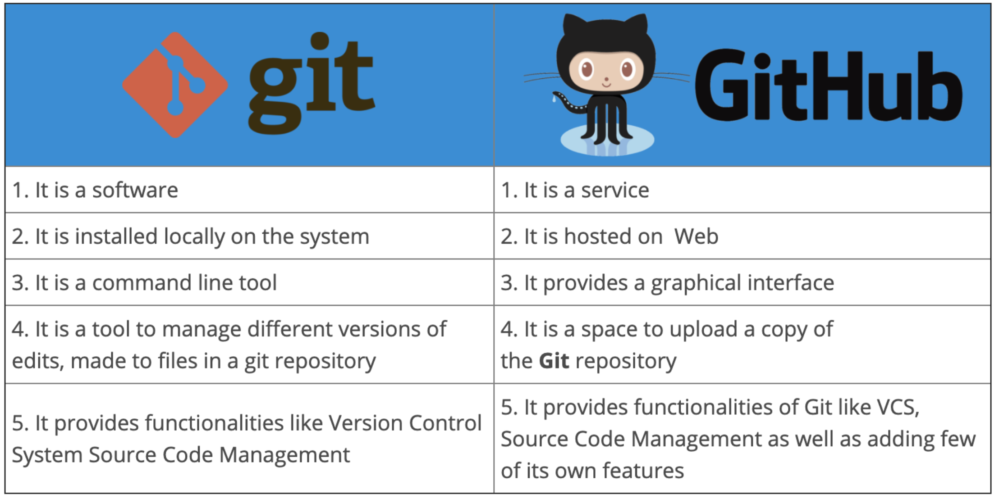

Git and Github¶
Introduction¶
Git is a version control software package similar to tracked changes and saving documents as "final1.pdf" and "final2.pdf"
Github is a 3rd party web-based graphical interface that has a copy of the project that you and/or other people can push and pull from to work on the same code simultaneously. Keep in mind, its not like google docs, it doesn’t update automatically, requires you to push changes and pull changes to the new computer.

Note
You must install git to use and create an account on Github. Check out this intro guide here
Using Git and Github¶
The Andersen Lab Github can be found here. As of the writing of this page, we have 236 "repositories" (or projects). Notice some projects are code like NemaScan and others are personal projects (abamectin) or manuscripts (mol_eco_manuscript). Anything can be a repo!
There are two main ways to use Git: (1) on the command line (aka Terminal on Macs) or with a GUI (graphical user interface). While for new users it is usually easier to start with a GUI like Github Desktop, it can cause headaches later on. However, only a few basic commands are really necessary to get started using git on the command line, so don't be nervous!
Important
Git GUI like Github Desktop cannot be used with repositories on QUEST. If you are building a pipeline on QUEST, it is essential to get comfortable with using Git on the command line
The GitHub Flow¶
There are several different Git branching strategies, but the most popular for our lab is the "GitHub Flow". This 8 step process can help keep our pipelines flowing, functional, and organized. New to the GitHub flow? I highly recommend you try out this amazing tutorial to practice all the steps from beginning to end. Then start putting it in use for your own pipelines!

The following 8 steps can be done on the command line or with a GUI. Below I will show the basic git commands for managing a repo on the command line, for more help you can find the slides from Code club at ~/Dropbox/AndersenLab/LabMeetings/CodeClub/20210326_KSE/20210326_slides.key
Note
When you are maintaining a project repo that only you are updating, it is less important to follow the GitHub Flow with creating short-lived branches. However, if you are developing/maintaining code that other people will use and/or working collaboratively this is an essential skill to master.
1. Clone/pull¶
# Cloning - new repo
cd < directory you want repo stored >
git clone https://github.com/AndersenLab/code_club.git
cd code_club
# pulling - already cloned repo you want to get newest version of
cd < directory of repo >
git pull
2. Branch¶
# create a new branch AND move to it
git checkout -b <branch_name>
# list all available branches
git branch
# move to a branch
git checkout < name of branch >
3. Edit¶
No code here... make any edits to the repo.
4. Commit¶
# first step - add changed files to staging area
git add <changed file>
# OR add ALL files to staging area
git add .
# commit files in staging area
git commit -m "<some message about what changes you made>"
5. Push¶
# push changes to remote
git push
# when it is your first time pushing a new branch, it might prompt you to set an upstream branch:
git push --set-upstream origin new_branch
It's possible that you will get an error when trying to push due to someone else having made changes to the repo since you last pulled from it. To fix this, simply do a git pull. With any luck, there won't be any conflicts between your changes and the changes you just pulled. If that's the case, go ahead and git push. If there are conflicts, you will need to edit the conflicting files, save them, and commit them. Then push. Conflicts are marked by <<<<<<<< and >>>>>>>> marking the remote version of the code and your version.
6. Pull request¶
I generally like to do this step online at github.com because I think it is useful to visually see the changes I made
- go to the repo site
- click the green "compare and pull request" button
- check the branches are right at the top: which branch is merging into which branch
- optional: assing reviewer and/or assignees on the right hand side. This is often useful when coding collaboratively
- update the title/comment for the pull request to let yourself and others know what changes were made and why
7. Inspect¶
I generally like to do this step online at github.com because I think it is useful to visually see the changes I made. If you scroll down you should be able to see which files were changed and what exact changes were made. If there are merge conflicts, github will walk you through fixing them.
8. Merge¶
When you are satisfied with your merge, click the green "merge pull request" button. Also make sure the delete the old branch when you are done as part of keeping the repo clean and clutter-free
Note
Good practice is to make a new branch to implement a new feature, then delete the branch once it has been merged. To start a new feature, open a NEW branch. Not as important on self-projects, but very important for collaboration
Command Line git commands¶
Basic
git clone- clone remote repositorygit pull- pull most recent version from remotegit add- add local files to be staged for remotegit commit- stage/commit local changesgit push- push local commits to remote
Intermediate
git branch- list all available branchesgit checkout- move to new branchgit status- checks which branch you are on and if you have any unsaved changesgit log- shows log of previous commits on current branchgit diff- shows details of changes made
For more, check out this tutorial, and others.
GitHub Flow Best Practices¶
- Any code in the main branch should be deployable
- Create new descriptively-named branches off the main branch for new work such as feature/add-new-plot
- Commit new work to your local branches and regularly push work to the remote
- To request feedback or help, or when you think your work is ready to merge into the main branch, open a pull request
- After your work or feature has been reviewed and approved, it can be merged into the main branch
- Delete stale branches!
- Once your work has been merged into the main branch, it should be deployed immediately
Note
GitHub Flow is not the only branching strategy out there! This was a great article about the three most common strategies with pros and cons for why you might use each one. I challenge you to think aobut which strategy might be best for our lab moving forward and let's start a discussion about it!
Resources¶
- This blog on the differences between
gitandgithub - "Git started" using
Giton the command line here - Overview of top Git GUI from 2021 here
- Great intro video to the GitHub Flow
- HIGHLY RECOMMENDED introduction tutorial to GitHub Flow
- Amazing article on different git branch strategies here